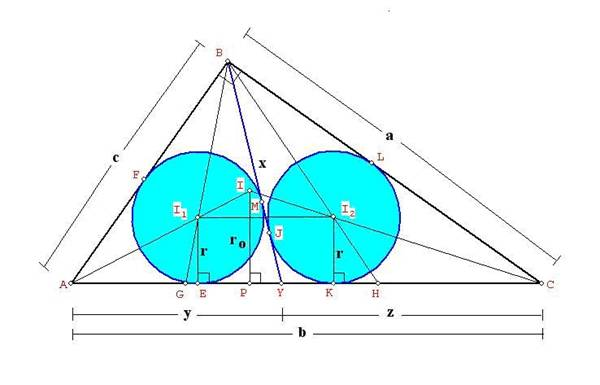

De investigación
Propuesta de José Carlos Chávez Sandoval, estudiante peruano de Matemática Pura en la Universidad Nacional Mayor de San Marcos
Problema 319
Dado el triángulo ABC, tal que m<ABC=90º. Sea Y en AC tal que los triángulos ABY y YBC tienen el mismo inradio, demostrar que BY^2=[ABC], donde [ABC] es el área del triángulo ABC. Además generalizarlo en función de BY y el ángulo ABC cuando este es diferente de 90º.
Sug. Usar cotangente del ángulo mitad.
Chávez, J.C. (2006): Comunicación personal.
Solución
y notas de Juan Carlos Salazar
Véase la figura

Procederemos
a tratar de establecer una relación para BY en función de los catetos.
Sean
(I1, r1), (I2, r2) los incírculos
de los triángulos ABY y BYC, determinados por la ceviana BY en el triángulo
rectángulo ABC, donde BG y BH son bisectrices de <ABY y <YBC
respectivamente. AI1 y CI2 se cortan en I, incentro de
ABC. Para este caso r1=r2=r, AB=c, BC=a, AC=b, r0
= inradio de ABC, AY=y, YC=z, AY=x, y sea h la altura sobre AC.
Al
aplicar el teorema del incentro en los triángulos ABY y BYC:
BI1/I2G=(x+c)/y=BI2/I2H=(x+a)/z
, ya que I1I2//AC. Luego:
y =
b(x+a)/(a+c+2x); z = b(x+c)/(a+c+2x)
Si
aplicamos el teorema de Stewart al triángulo ABC con ceviana BY:
b.x2
= y.a2 + z.c2-yzb
Al
reemplazar y y z en esta última relación obtendremos un ecuación para x en
función de los lados a, b y c, sabiendo que b= (a2+c2)1/2,
pero que desafortunadamente no es posible resolverla por métodos tradicionales.
Pero
tenemos otra alternativa, establecemos una relación de áreas:
[ABC]
= [ABY] + [BYC]
[ABC] = (c+x+y)r/2 +
(x+a+z).r/2=(a+b+c+2x)r/2
x = ac/ (2r) – (a+b+c)/2... (1)
Luego
usaremos una relación para los inradios de los triángulos parciales
determinados por una ceviana, la altura h y el inradio r0 de ABC:
2/h=1/r1+1/r2-r0/
(r1r2)
En este caso: r1 = r2
= r:
2/h=2/r-r0/r2
r2-hr+hr0=0
Resolviendo esta ecuación: r =
(h/2)-(h/2).(1 - 4r0/h) 1/2
También: r0/h=b/ (a+b+c).
Luego:
r=(h/2)-(h/2).[1 - 4b/(a+b+c)]
1/2
r =(h/2)-(h/2).[(a+c-3b)/ (a+b+c)]
1/2
Reemplazando: h = ac/b
r = ac / (2b)- [(ac) / (2b)]. [(a+c-3b)/(a+b+c+)]1/2
Esta
última expresión la reemplazamos en (1) para obtener x, que como podemos
inferir no será una expresión sencilla.
Sin
embargo, al utilizar el siguiente resultado más general (*):
Si
en un triángulo ABC, se traza la ceviana BY, de tal modo que los incírculos de
ABY y BYC son iguales, luego BY=(s(s-b))1/2.
Para este caso: r0=(s-b),
luego sr0 = s(s-b) = ac/2,
por lo tanto:
BY = x = (ac/2)1/2
[ABC]=
BY2
(*)
Agradezco a Darij Grinberg por facilitarme esta información. Ver:
http://www.mathlinks.ro/Forum/viewtopic.php?t=32586